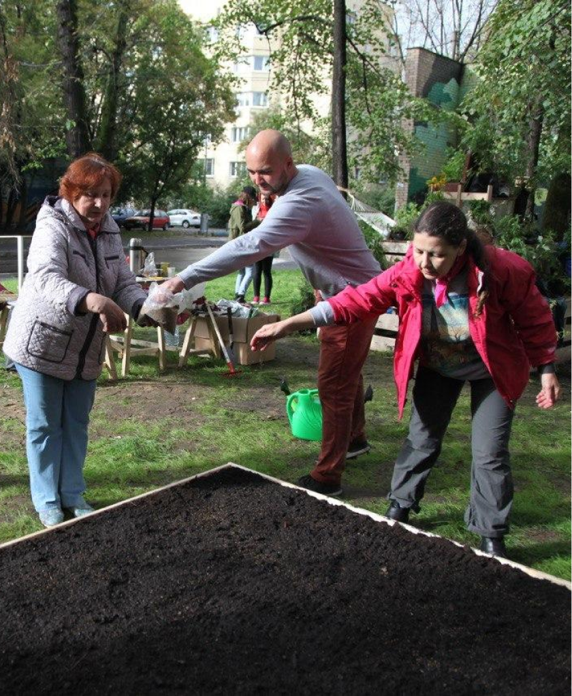
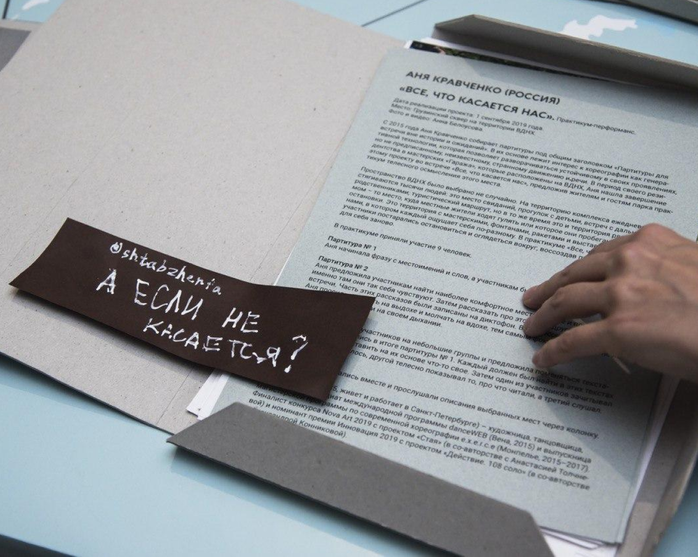

Есть ли у вас
мастерская?
78% | 36% |
| опрошенных считают, что художнику необходима мастерская | художников имеет мастерскую в данный момент |
78% | 36% |
| опрошенных считают, что художнику необходима мастерская | художников имеет мастерскую в данный момент |